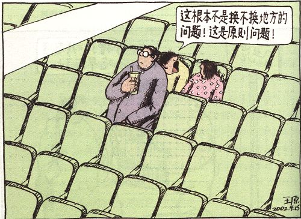
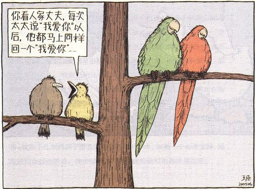

拿到网上购买的《无目的的美好生活》，晚上回家狠狠地阅读了N篇，有的是洪晃BLOG上看过的，有的对于我是新鲜的文字。真是羡慕妒忌恨啊，我这辈子估计是拥有不了这样的风趣幽默，酣畅淋漓，很难达到“走自己的路让驴说去”的境界 （中国茶某位访客的留言）。有个小朋友问：“她生活中是不是真的象书中表达的那样表达她自己呢？”“也许更豪爽呢？

下面要谈的是“但是”，但是这本书行间距过大，行与行之间约为6毫米，专业点说那个啥注水猪肉，是这样说的吧？缩短到3-4毫米，也许让人感觉实在些？读者不会因为一本书有多厚多重多精美的包装而掏钱购买它，至少我不会这么做，重要的是里面的内容。即使它变成一50页的手抄本，价格仍然卖25元，我也不会拒绝的。里面的彩色插画有意思，我一同事拿起这书时光注意看插画了。有魅力的书和有魅力的人一样根本不需要花哨的打扮，人们可以拒绝美丽，但拒绝不了迷人。喜欢洪晃，不过这样的女人跟恐龙一样快绝种了，即使有个别侥幸存在，环境是相当恶劣滴~你还要有资本~

《无目的的美好生活》，按照洪晃文字里的逻辑，媒体分为有目的VS有理想的，换个书名是不是可以叫《有理想的美好生活》？这种理解来自其中一篇《脑风暴》。顺便提一下，订购了洪晃全年的《ILOOK》，为何时尚杂志的封面必须是美女帅哥？均采用16开的尺寸，殊不知上班族随身携带阅读多么的不方便！简约也是时尚，简约的封面设计可以在时尚杂志中独树一帜，形成鲜明的形象，就跟看到彩色条纹马上想到paul smith，哪天看到某种设计，不用看文字脑子里反应出的信息：“哦，这是洪晃的杂志...”同时自恋的说一下，Chinese Tea延用了5年多的紫色系背景，是不是也会给人留下深刻的BLOG印象？以前我特逃避别人说我自恋，现在我觉得喜欢自己有什么不好？自恋有利身心健康，不是吗？
洪晃的“七分人性，三分完美”比“十分的完美”更可爱，十分完美的人说着别人爱听的话，展示着别人喜欢的微笑，穿着别人顺眼的衣服，特厌恶这样的人，稍有判断力的，很快就能识破那些不真实的表象，当华宴散去，心中留下最多的是空洞和孤独，人前人后做的周到，那颗心才是最累，这当是低能的思维？高手一般时不时卖个破绽给你，就跟自嘲的水平......

这本书的封底上有两句是这样的：
要脸的跟着别人的感觉走；
不要脸的跟着自己的感觉走。
---《我们VS他们》
Yucheng说：“跟着别人的感觉走，不一定是要脸的。可能只是要立牌坊。而跟着自己的感觉走，不一定就是不要脸的，但，一定要，要心的。”她常常爆出狂经典的总结，让人爱死她~
说不上究竟哪句是褒义，哪句是贬义，就象人生不分好与坏，看你自己要什么？要成为什么样的人？至于“驴”说了什么，那根本不是人考虑的问题。
11 Responses to “无目的，有理想”
2007-08-01
要脸的跟着别人的感觉走；
不要脸的跟着自己的感觉走。
要脸的应该学会不要脸，学习中。。。。。。。
2007-08-01
看她的ＢＬＯＧ还是挺喜欢这人！敢说！真实！幽默！书上月买了，才看了个头！
2007-08-01
很少看这种类型的书，总认为看这些书的女孩过于多愁善感了些。外表上或许洋溢着自信，充实，内心却一直有一片属于自己的寂寞。
透过别人的眼睛看世界，透过别人的思想去思考，虽然会有很多共鸣，却丢失了一点自我。
看着这些漫画，很容易令我想起我非常喜欢的一个漫画家的漫画，郑辛遥的智慧快餐，看了多年的新民晚报，智慧快餐从没有拉下过。
2007-08-01
共鸣在交集部分，同时各自是独立的一个圆。：）
2007-08-01
要脸的权当不要脸的都是驴，驴都清心寡欲(有得吃的就能干）加固执，所以自古把道士比作驴，（民主党也以驴作形象），岂用大费周张跟着别人的感觉走了.......
不要脸的是超自恋狂，就像“芙蓉姐姐”类的，怕是此生学不来了。
作一个要脸的自恋者也不错，即有迷人的地方，也有自己的执着.......
2007-08-01
本来不要脸， 你强迫我要脸，５５５～～～～
2007-08-01
给脸不要脸
脸是别人给的吗？；－）
2007-08-02
校对时小小失误，举例，p37，法语当中该是je t’aime，排版时那个e和t合到一起，变成了jet。印象中书中好几处关于法语的词汇都是这种小毛病，但也难怪，咱们毕竟全民英文普及教育
2007-08-02
中文也有错别字呢~没多到一定程度上不会影响阅读的~
2007-08-03
要做一个有理想，没目的的人很难。世俗的干扰很大。
2007-08-22
喜欢你的博客，希望还可以看到好的咚咚，祝开心哦！
Leave A Reply
存档只读，评论已关闭。